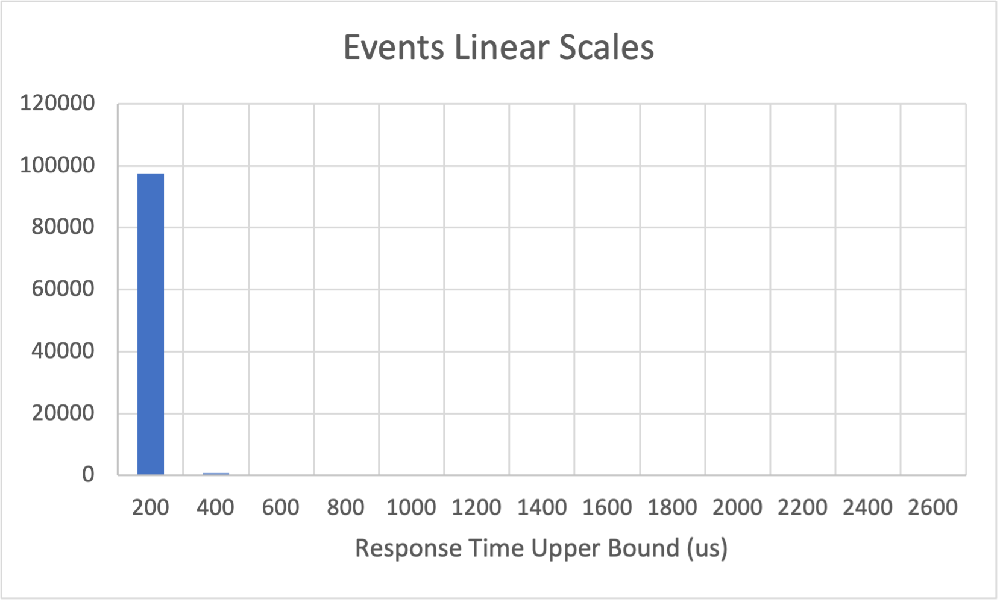
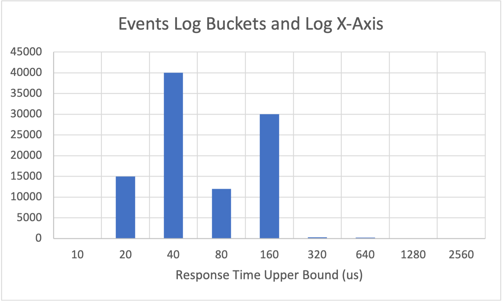
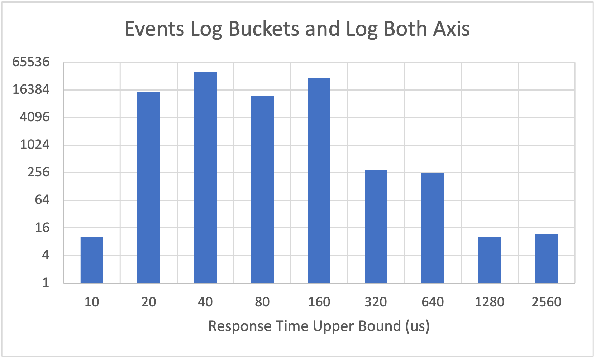
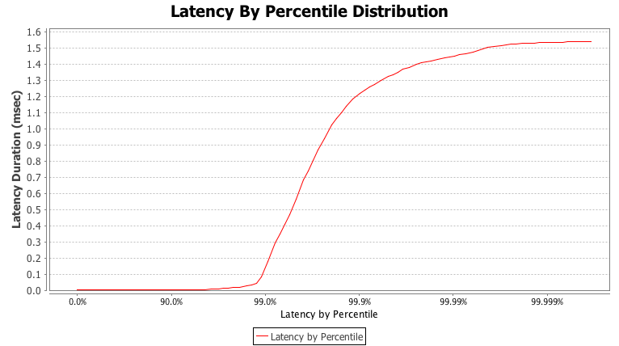

A review of statistics
One of the most common statistics thrown around the table in most capacity planning meeting is Transactions Per Second or TPS. It is implied that TPS is an average throughput of the system at capacity. There is one problem with that: Little's law says that being at capacity is a dangerous place to be for response time. Most of these tests intentionally fill up the work queue of their victim application and track response time as an afterthought.
So lets look how we can use statistics to measure data in a way that puts latency first.
Standard summary statistics
The standard set of summary statistics is defined as the number of data, the minimum, maximum, mean or average, and the Standard Deviation. For 2D graphs we can also calculate the linear regression line, as well as the std error on that regression.
We are often trained to believe that this is adequate to describe most things, but it actually rarely is. A perfect counter example is Anscombe's quartet as seen below, All the 4 graphs have the same set of summary stats.

When we look at these 4 sets of data, we can see very different patterns, but, again, all have the same average, standard deviation, linear regression, regression error, and more. While this example is extreme, it does underscore the danger of relying on just summary stats. We really need a better way to view our data.
A better approach with histograms
Humans are very visual creatures, and graphs are an amazing tool for visualizing a huge amount of data very quickly. I have seen visualizations whipped up in a few min on R, the open source statistical analysis tool chain, that compress unwieldy data into meaningful visualizations. Numpy can do similar magic. While using both those tools are beyond the scope of this course, I do want us to be familiar with a few key ideas and tools when it comes to analyzing our response time.
Most of these visualizations rely on having a timing for every event or a sample of events to be recorded individually. While exporting this raw data from within the application covering internal service times and queue is ideal, the cost of doing so is often quite high. Packet Capture at both the OS and networking level can help shift the impact out of your application, but the trade off is granularity.
So, lets assume we have 2 values for each message our app gets: the arrival time \(a\) into the system, and the response time \(r\) was fully sent. Using this data, we can compute a service time for each event simply by \(r-a=s\).
Now that we have S, lets make a histogram of that data.

Here is the first problem we run into with visualizing performance data, high tails. So lets re-adjust our buckets to be logarithmic.

Now thats better. But we still barely see our tails. This often happens with perf data, and it may be helpful to log scale our X axis as well. Be careful to ensure that all values are non-0 before doing this.

Sometimes, log scaling the y axis may distort our view of the data, so I recommend carefully inspecting both when looking at data to make sure you aren't lead astray

The last visualization we want to talk about is a Cumulative distribution plot. This is often what is used when visualizing performance data as well, and the function is used in our modeling simulations as well. A view like this is often seen in performance reports for various applications.
The way to view the CDF is that for any value on the X axis, the value of the Y is the probability of a randomly selected value being at or below that X value. By adjusting the bucket granularity and the scaling of the axis we can easily have a CDF show the performance curve for both typical cases as well as at our tails.
A note about these graphs: They are made in excel using made up data. I highly recommend using numpy or R to produce these graphics. Both are able to produce professional looking graphs quite easily, and ones with much better granularity than I was able to make up for data series.
Percentiles
Percentiles are also a great tool for quickly analyzing the tail of our response time graph. The percentile \(p\) of series \(a\) is defined as the first number for which \(p\)% of the numbers in \(a\) are less than or equal to. Most of us are familiar with the Median, which is the 50%'ile.
When looking at the tail, we typically like to look at these percentiles: 90, 95, 98, 99, 99.9. Depending on the volume of the data in the data set, we may also look at the 99.99. We rarely judge an applications performance by its maximum, or the 100%'ile.
So, what do these numbers tell us? Well, the 99%'ile tells us that 99% of messages were processed faster than that value, while 1% where processed slower. When looking at service time, having a spike is to be expected where the 99.99%'ile is much higher than the 50%'ile. We will spend a lot of this class covering why that happens and what to do about it.
Response time over time
Our systems often have transient load and variable interactions by customers. Displaying a time series of our response time distribution can be key in identifying not only surprises in our customers activity, but also our systems.
Let me tell you a story. At a company I worked for, one of our latency critical systems had a very weird behavior. We had super detailed response time data over the course of the day, and we notices that there were 2 "modes" of latency, not explained by queueing when looking at the CDF. We were stumped for days.
TODO graph
Then someone had the bright idea of plotting that data over time and we immediately noticed the weird behavior. Our app was going to some sort of evil mode for a period of many seconds at a time, and then coming out of that mode. In evil mode our service time increased significantly.
TODO graph
That time series view ultimately helped us to isolate the problem. 2 takeaways from this one:
- Capture the finest data you can. You can try capturing every event or a sample of events and export telemetry data on those events to another system for analysis. Or, you can use time boxed histograms to log every few seconds and your favorite logging tool can pease it together for you.
- Don't be afraid to try looking at your data in a different way. CDF vs PDF, individual events vs a histogram, large time windowing vs small.
HDR Histogram
High Dynamic Range Histogram is a wonderful java tool that allows us to track values in a dynamically sized histogram. The buckets are sized to preserve a fixed number of digits of precision, which is great for performance measurements. The larger the values, the larger the bucket. The library outputs this data typically as a table of percentiles, but the data can also be serialized out of the system. It even provides lock free abstractions to record values from many threads and periodically dump the results.

The above example was plotted using data produced from HDR histogram and a tool called HistogramLogAnalyzer. It shows the applications tails, and, unfortunately, conflates latency for response time.
© Erik Helleren, 2021. Built on 2021-06-08 from commit 1d1210ef. Buy me a coffee.